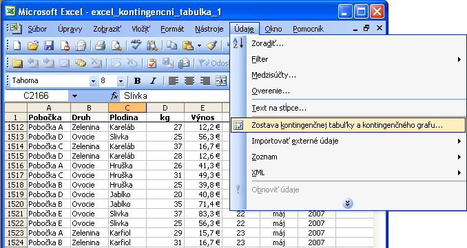
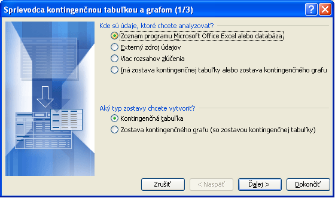
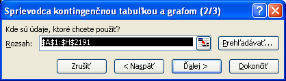
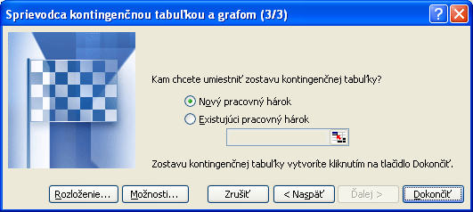
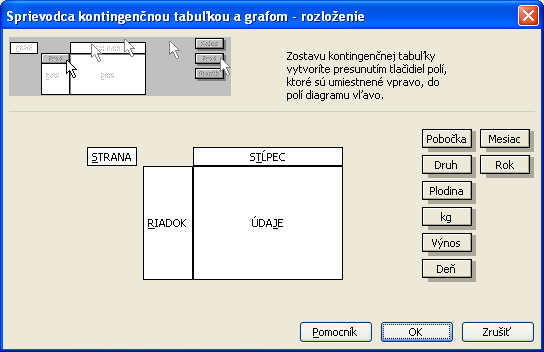
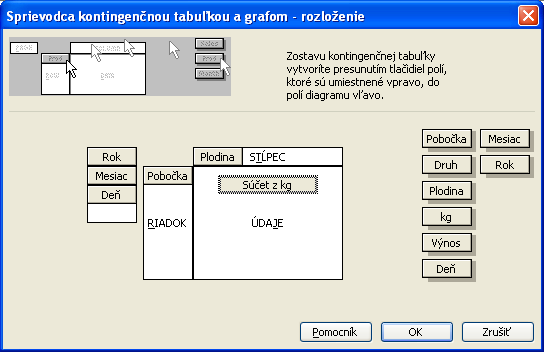
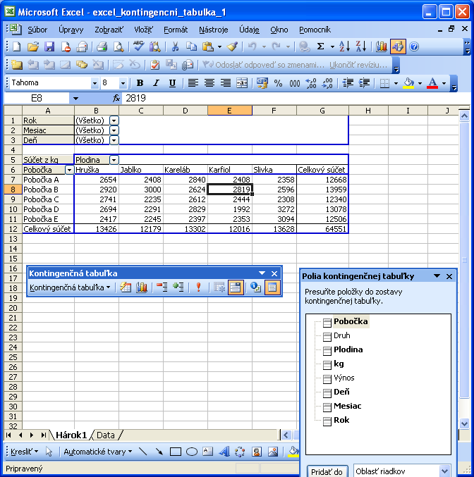

Kontingenčná tabuľka
Kontingenčná tabuľka je interaktívna tabuľka, ktorá rýchlo skombinuje a porovnáva velké množstvo dát.
Pracuje s tabuľkami, kde každý prvok ke popísaný jedným riadkom, kde v niektorých stĺpcoch sú texty-popisy
a v niektorých sú údaje o množstve, ktoré môže byť vyjadrené napr. v kg, litroch, cene a pod.
Kontingenčná tabuľka dokáže zosumovať podľa popisných stĺpcoch.
Ako vzorovú tabuľku mám predaj niektorých vybraných komodít v 5. pobočkách A-E. Každý riadok popisuje
predaj jednej komodity za jeden deň v jednej pobočke
Ukážka niekoľkých riadkov tejto tabuľky
| Pobočka | Druh | Plodina | kg | Výnos | Deň | Mesiac | Rok |
|---|
| Pobočka A | Zelenina | Karfiol | 37 | 20,0 € | 1 | január | 2006 |
| Pobočka C | Ovocie | Jablko | 36 | 73,4 € | 1 | január | 2006 |
| Pobočka A | Zelenina | Kareláb | 32 | 14,4 € | 1 | január | 2006 |
| Pobočka A | Ovocie | Hruška | 20 | 31,8 € | 2 | január | 2006 |
| Pobočka C | Zelenina | Karfiol | 34 | 18,4 € | 2 | január | 2006 |
| Pobočka A | Ovocie | Hruška | 22 | 35,0 € | 2 | január | 2006 |
| Pobočka C | Zelenina | Kareláb | 21 | 9,5 € | 3 | január | 2006 |
| Pobočka C | Zelenina | Karfiol | 23 | 12,4 € | 3 | január | 2006 |
| Pobočka B | Zelenina | Kareláb | 32 | 14,4 € | 3 | január | 2006 |
| Pobočka B | Zelenina | Kareláb | 37 | 16,7 € | 4 | január | 2006 |
| Pobočka D | Zelenina | Kareláb | 39 | 17,6 € | 4 | január | 2006 |
Kontingenčnú tabuľku vytvoríte spustením "Sprievodcu kontingenčnou tabuľkou a grafom", který nájdete v menu "Data".

V sprievodcovi zadajte, že dáta berieme z excelu a chceme vytvoriť kontingenčnú tabuľku.

potom určíme rozsah dát, ktoré budú kontingenčnú tabuľku vytvárať

no a nakoniec určíme kde si kontingenčnú tabuľku dáme vytvoriť - ja som zvolil nový hárok

a zvolíme rozloženie (ešte nie dokončiť), kde určíme vzhľad novej tabuľky,
vytvorí sa nasledovné okno

Kontingenčná tabuľka má teda niekoľko oblastí
- strana
- sem zadáme pole podľa ktorého chceme vyberať údaje do novej tabuľky - vlastne nastavíme filter.
Ja sem vyberiem polia deň, mesiac, rok. Týmto budem môcť vyfiltrovať údaje napr. len konkrétny rok
alebo konkrétny rok a mesiac a tak.
- riadok
- sem zadaný stĺpec vytvorí v našej tabuľke toľko riadkov, koľko rôznych hodnôt obsahuje daný stĺpec.
Ja sem dám stĺpec pobočka, čím mi v tabuľke vzniknú riadky pobočkaA až PobočkaE.
- stĺpec
- sem zadaný stĺpec vytvorí v našej tabuľke toľko stĺpcov, koľko rôznych hodnôt obsahuje daný stĺpec.
Ja sem dám stĺpec plodina, čím mi v tabuľke vzniknú stĺpce s názvami plodín jablko, kareláb a tak.
- údaje
- sem zadávame nejaký číselný údaj, ktorý vyjadruje množstvo. Ja sem zadám kg.
Ešte povedať ako určím, ktorý stĺpec pôjde kam - jednoducho ťahaním a čo keď sa pomýlil - chytím chybne položený stĺpec a pustím ho mimo oblastí.

Teraz už dáme dokončiť a máme výsledok.

Pri tvorbe tlačovej zostavy možme pridávať riadky, stĺpce ako v iných tabuľkách a navyše v oblastiach strana, stĺpec, riadok
môžme vyfiltrovať čo nás zaujíma.
Pozn.
Ak meníme dáta v pôvodnej tabuľke, musíme si kontingenčnú tabuľku dať obnoviť aby sa tieto zmeny do nej premietli.